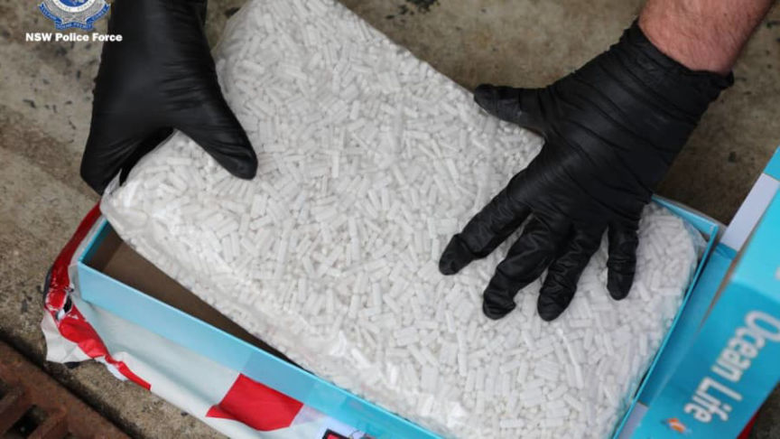
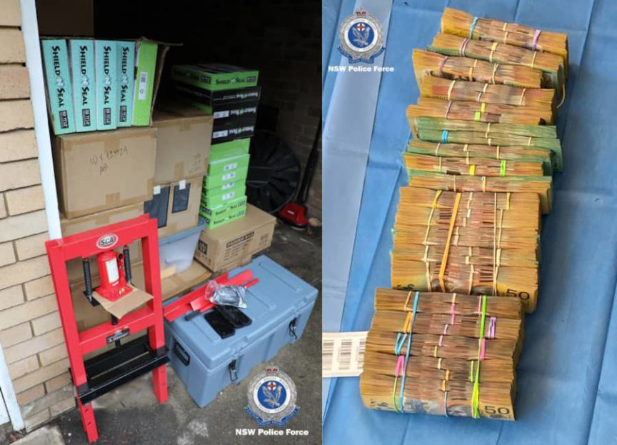
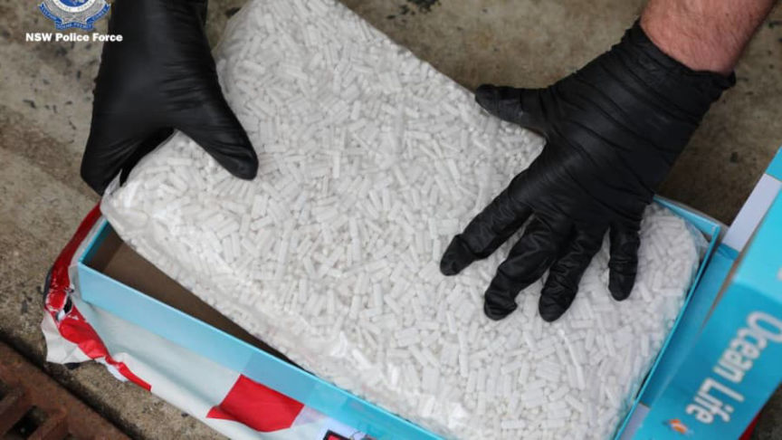
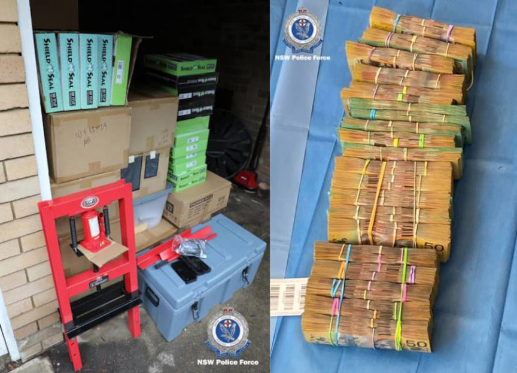

Australian Man Arrested for Selling Drugs on the Darkweb
~2 min read | Published on 2022-03-06, tagged Arrested, Darkweb-Vendor using 338 words.
Authorities in Australia arrested and charged a Sydney man for allegedly distributing drugs on the darkweb.
According to the New South Wales Police Force, Matthew Spencer Smith, 35, from Sydney, distributed large quantities of drugs, including meth and cocaine, to customers on an undisclosed darkweb marketplace.

Smith’s arrest results from an investigation by Strike Force Orielton that began in 2021. The State Crime Command’s Cybercrime Squad established the strike force to investigate the organized sale of illicit drugs in NSW.
During the investigation, detectives identified a “significant” darkweb drug distribution operation in Sydney. Investigators acquired search warrants for several properties in Sydney associated with the drug trafficking operation.

On February 24, 2022, the investigators executed a search warrant at Smith’s residence. The search resulted in the seizure of drug packages hidden in jigsaw puzzles and drug packages prepared for distribution. Police seized $400,000 in cash, electronic devices, designer watches, and jewelry.
The investigators also searched a storage unit, resulting in the discovery and seizure of additional drug packages.
On February 25, investigators searched another property and several post office boxes and seized more than $500,000 in cash and more drug packages.
Cybercrime Squad Commander, Detective Acting Superintendent Gordon Arbinja:
“The sale of illicit drugs on the dark web can be difficult to investigate but by no means impossible; this arrest should send a clear message that your identity can be exposed, and you will be prosecuted. It will be alleged that this individual used cryptocurrency to facilitate transactions made on the dark web before posting prohibited drugs in the mail.”
Smith appeared at the Liverpool Local Court on February 25 and was charged with ten counts of drug trafficking and money laundering offenses.

DNL: Yeah, no idea who the vendor is but I seem to recall another recent case in Australia involving drugs hidden inside puzzle boxes.
archive.org/archive.ph
According to the New South Wales Police Force, Matthew Spencer Smith, 35, from Sydney, distributed large quantities of drugs, including meth and cocaine, to customers on an undisclosed darkweb marketplace.

Pills seized by Australian law enforcement during a raid at a property owned by Smith
Smith’s arrest results from an investigation by Strike Force Orielton that began in 2021. The State Crime Command’s Cybercrime Squad established the strike force to investigate the organized sale of illicit drugs in NSW.
During the investigation, detectives identified a “significant” darkweb drug distribution operation in Sydney. Investigators acquired search warrants for several properties in Sydney associated with the drug trafficking operation.
This guy apparently had some weight on hand.
On February 24, 2022, the investigators executed a search warrant at Smith’s residence. The search resulted in the seizure of drug packages hidden in jigsaw puzzles and drug packages prepared for distribution. Police seized $400,000 in cash, electronic devices, designer watches, and jewelry.
Packages of drugs confiscated by police. Apparently ready to be shipped.
The investigators also searched a storage unit, resulting in the discovery and seizure of additional drug packages.
On February 25, investigators searched another property and several post office boxes and seized more than $500,000 in cash and more drug packages.
Smith had all the standard equipment.
Cybercrime Squad Commander, Detective Acting Superintendent Gordon Arbinja:
“The sale of illicit drugs on the dark web can be difficult to investigate but by no means impossible; this arrest should send a clear message that your identity can be exposed, and you will be prosecuted. It will be alleged that this individual used cryptocurrency to facilitate transactions made on the dark web before posting prohibited drugs in the mail.”
Smith appeared at the Liverpool Local Court on February 25 and was charged with ten counts of drug trafficking and money laundering offenses.

Smith had all the standard equipment.
DNL: Yeah, no idea who the vendor is but I seem to recall another recent case in Australia involving drugs hidden inside puzzle boxes.
archive.org/archive.ph